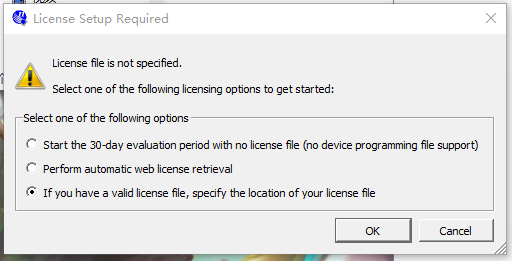
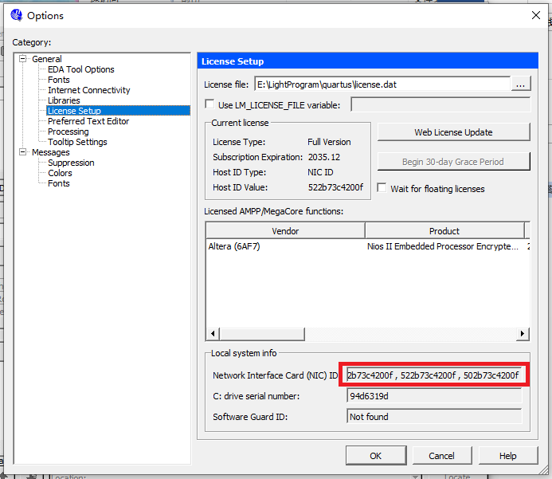
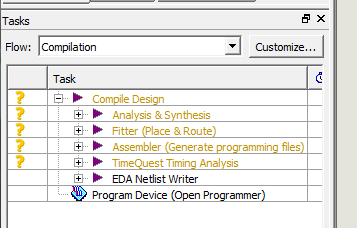
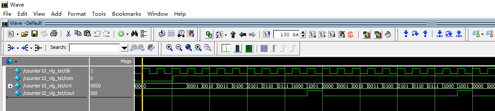

When learning Verilog for simulation, you can choose different simulation environments. FPGA development environments include Xilinx's ISE (currently discontinued) and VIVADO; Intel's Quartus II; ASIC development environments include Synopsys's VCS; many people also use Icarus Verilog and GTKwave, which are more lightweight.
Although ISE or Quartus II come with their own simulators, their functionality is still lacking. Therefore, here we introduce the test method of Quartus II + Modelsim co-simulation, with the runtime environment being a 64-bit Win10 system.
Quartus II Installation
The Quartus version used in this introduction is 10.1.
Currently, the Quartus II official website no longer has installation packages for versions below 13.1. You can install versions 13.1 or above. The functions are basically the same. Download address:https://fpgasoftware.intel.com/13.1/?edition=subscription&platform=windows
When downloading Quartus II 13.1 or above, the official website will also recommend the corresponding version of Modelsim; just download them together.
Start the installation, modify the installation path, and follow the default settings step by step for everything else.
The figure below is a screenshot of a successful installation.

If prompted for a License file, as shown in the figure below, you need to specify the license file used when purchasing the software.

If the license file needs to replace the Host-ID, simply replace the HOSTID in the license file with any ID from the NIC options, as shown in the red box in the figure below:

After installing Quartus II 10.1, you also need to install Device, i.e., install library files that support various programmable logic device models; otherwise, Quartus II cannot create projects normally.
The installation path needs to be selected as the Quartus II installation path; at this point, the Device installation can automatically recognize Quartus II.
The latest Quartus II (e.g., the 2016 version) already supports integrated installation.
Modelsim Installation
Choose the modelsim-win64-10.1c-se version for Modelsim.
You also need to modify the installation path, then follow the default settings for the rest.
After installation, it may prompt you to restart the computer; just restart.

Creating a Quartus II Project
Create a Project
File->New project Wizard
Set the working path, project name, and top module name.
Note that the path and names must not contain Chinese characters.

Select Device Model
We are only performing simple simulation, not download, programming, etc., so we don't need to worry about specific signals; just pick any one.
Then keep clicking Next until Finish.

Create a New Verilog Source File
Next, we will perform a simple simulation of a 4-bit wide decimal counter.
Click: File->New->Verilog HDL File->OK
Click: File->Save As
Enter the module name as: counter10.v
Note that the top module name must be the same as the project name, otherwise an error will occur (as shown in the figure).
Copy the Verilog code into the file counter10.v, and perform one-click compilation (which actually includes compilation, synthesis, place and route, etc.).
When errors are reported, you can click Error log to locate the errors, make modifications, until there are no Errors.

Quartus II Calling Modelsim for Simulation
Set the simulation to Modelsim-Altera
Click: Tool->Options->EDA Tool Options
Change the address after Modelsim to the path of the Modelsim executable.

Select Simulator
Click: Assignments -> Simulation
Select ModelSim for Tool name, and set Format, Time scale, etc., as shown in the figure..

Write the Testbench File
Click: Processing->Start->Start TestBench Template Writer
If set correctly, it will be generated under the project path simulation/modelsim.vtfile.
.vtThe file template already provides the port part of the code, interface variable declarations, instantiation statement mappings, etc. What we need to do is fill the test code into the appropriate positions in the testbench.
Here we simply write the clock and reset drive code, as shown in the figure below.

Add the Testbench to the Project
Click: Assignments -> Settings -> Simulation
In the Compile test bench option, select New, set the Test bench name, and use the File name browse method to add the .vt file generated in the previous step to the project.
Note that the testbench file name must be consistent with the top module name in the testbench; otherwise, an error will occur when launching Modelsim later, and normal simulation will not be possible.

Re-run One-click Compilation
At this point, you will find that the compilation status in the Tasks bar has changed to a question mark, and you need to re-run one-click compilation.

Call Modelsim for Simulation
Click: Tools->Run Simulation Tool->RTL Simulation
At this point, the Modelsim software will start automatically.
We will not provide a detailed introduction to Modelsim operations here.
From the simulation waveform, we can see that our design has completed the basic function of decimal counting.

Summary
From memory, the Quartus II + Modelsim co-simulation function is both powerful and easy to install. A few years later, when I went through this process again, I found the steps to be somewhat cumbersome, and it took me a whole night to get it done. Many details have also been mentioned above; just pay more attention. However, when you have the opportunity to perform large-scale digital module simulations in the future, you will find this method effective.
In the following tutorials, some simple simulations may be done with other software, and the screenshot interface may not match Modelsim. When you see this, don't doubt the accuracy of the simulation; this is a special note.
The design module and testbench source code will also be fully provided, so you can completely simulate and verify by yourself.